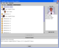

User View:
|
The User View shows all the users that are enrolled in the same classes and teams as the person who logs in. The users that are currently online are indicated by the word “on-line” next to the user icon. In addition, their name is set in a bold font. By double clicking on a user icon, the user information will expand and reveal all the classes the selected user is enrolled in. One can further double click on any of the user associated classes and all the teams and groups linked to that class in which the user is enrolled in will show up.  To view more detailed user information, select a user icon and then click on the “View User Info”. This will open up a user information area on the right side in the “User View”. A user picture is shown, if it is available, as well as other specific user information. |